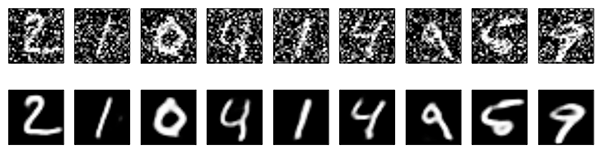
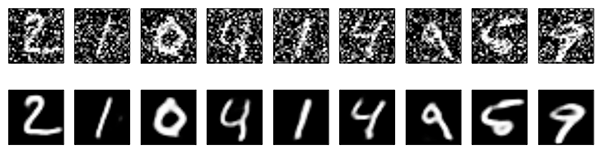

1
An Intoduction to Autoencoders
Autoencoders
Neural networks come in all shapes and sizes. And is exactly the shape and size that determine the performance of the network at solving a certain problem. An autoencoder is a special type of neural network whose objective is to match the input that was provided with. At a first glance, autoencoders might seem like nothing more than a toy example, as they do not appear to solve any real problem. Let’s have a look at the network below, which features two fully connected hidden layers, with four neurons each. If we train this network as an autoencoder, we might encounter a serious problem. The edges that might converge to a solution where the input values are simply transported into their respective output nodes, as seen in the diagram below. When this happens, no real learning is happening; the network has rewired itself to simply connect the output nodes to the input ones. However, something interesting happens if one of the layers features fewer nodes (diagram below). In this case, the input values cannot be simply connected to their respective output nodes. In order to succeed at this task, the autoencoder has to somehow compress the information provided and to reconstruct it before presenting it as its final output. If the training is successful, the autoencoder has learned how to represents the input values in a different, yet more compact form. The autoencoder can be decoupled into two separate networks: an encoder and a decoder, both sharing the layer in the middle. The values \left[Y_0, Y_1\right] are often referred to as base vector, and they represent the input image in the so-called latent space. Autoencoders are naturally lossy, meaning that they will not be able to reconstruct the input image perfectly. This can be seen in the comparison below, taken from Building Autoencoders in Keras. The first row shows random images that have been fed, one by one, to a trained autoencoder. The row just below shows how they have been reconstructed by the network. However, because the autoencoder is forced to reconstruct the input image as best as it can, it has to learn how to identify and to represents its most meaningful features. Because the smaller details are often ignored or lost, an autoencoder can be used to denoise images (as seen below). This works very well because the noise does not add any real information, hence the autoencoder is likely to ignore it over more important features.

However, because the autoencoder is forced to reconstruct the input image as best as it can, it has to learn how to identify and to represents its most meaningful features. Because the smaller details are often ignored or lost, an autoencoder can be used to denoise images (as seen below). This works very well because the noise does not add any real information, hence the autoencoder is likely to ignore it over more important features.
